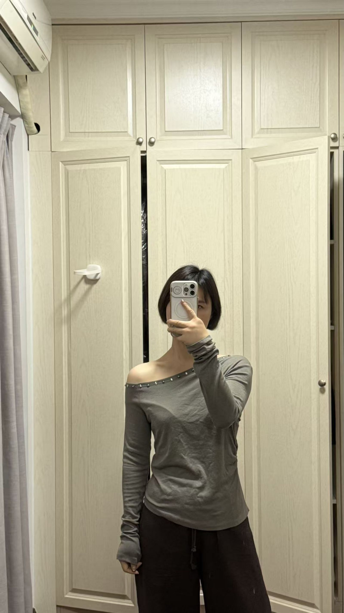
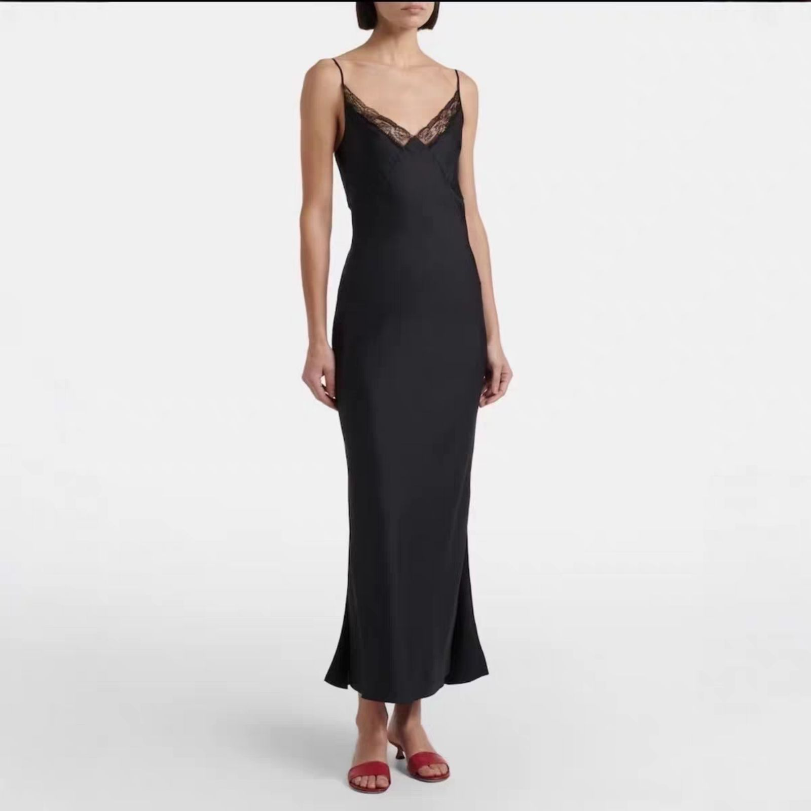
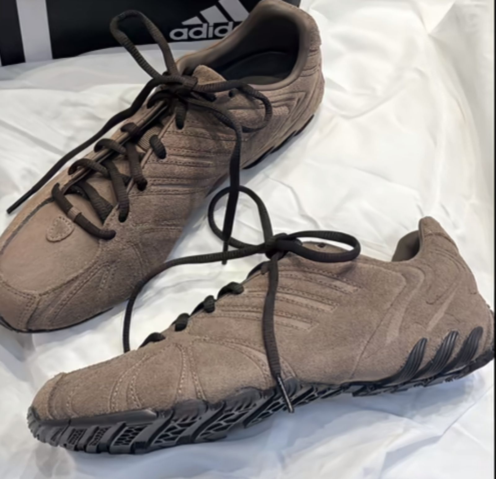

original

6.7s · mask 0.0921 · cloth_seg row 0 (upper)

22.4s · ok

original

4.1s · mask 0.1165 · cloth_seg row 2 (full)

26.9s · ok

original

6.4s · mask 0.0177 · cloth_seg row 2 (full)

29.7s · ok
| category | original | A · rembg cloth_seg | B · wanx description_edit |
|---|---|---|---|
| top |  original | 6.7s · mask 0.0921 · cloth_seg row 0 (upper) | 22.4s · ok |
| dress |  original | 4.1s · mask 0.1165 · cloth_seg row 2 (full) | 26.9s · ok |
| shoes |  original | 6.4s · mask 0.0177 · cloth_seg row 2 (full) | 29.7s · ok |